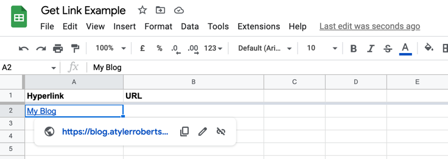
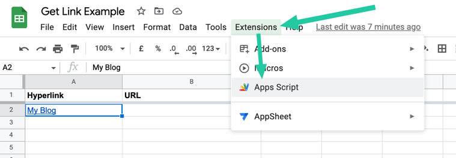
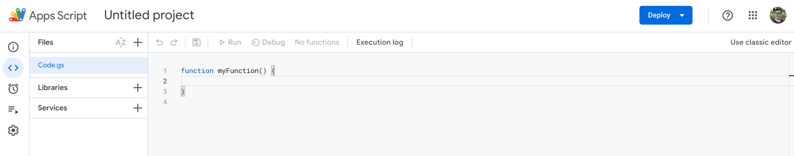

Extracting URLs from hyperlinks in Google Sheets
I pretty purposefully try to avoid Google Apps Script unless I absolutely need to use it, and while helping a friend with Google Sheets today I found one such need: how can you get the URL of a hyperlink that wasn't made with the HYPERLINK() function?
Because the link is part of the "rich text" in the cell, it's not something that standard Google Sheets functions can extract (or even see). To fix that, here's a handy bit of script copied/conglomerated from a few Stack Overflow threads (like this one!).
You can add it to your sheet by going to Extensions > Apps Script, which will open a code editor.  When you add a function in that code, it becomes available as a function in your spreadsheet. So if you paste in the above code (and save your changes), you can use =GETLINK("A2") to get the URL from a hyperlinked value in cell A2.
Note that the input does need to be in double quotes, which is unlike a lot of Google Sheets formulas. That's because when you insert the cell reference (sans quotes), Google Sheets tries to send the contents of that cell into the formula instead, minus the rich text formatting and hyperlink that we actually need. If the cell you want to pull the URL from needs to be variable, you can try =GETLINK(CELL("Address",A2)) to achieve the same thing.
If you run into cases where the function returns a blank cell, that usually means that the original text has multiple hyperlinks applied, or is formatted in some other weird way (this happens a lot if you are copy/pasting from websites like we were). In those cases, changing value.getLinkUrl() to value.getLinkUrl(0,1) tends to help solve it; that tells the function to look at just the first character in the input, and return whatever hyperlink was applied there.